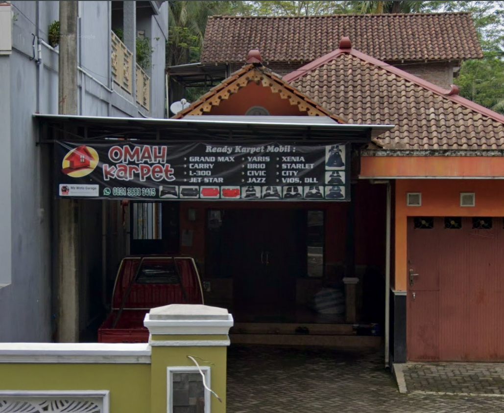
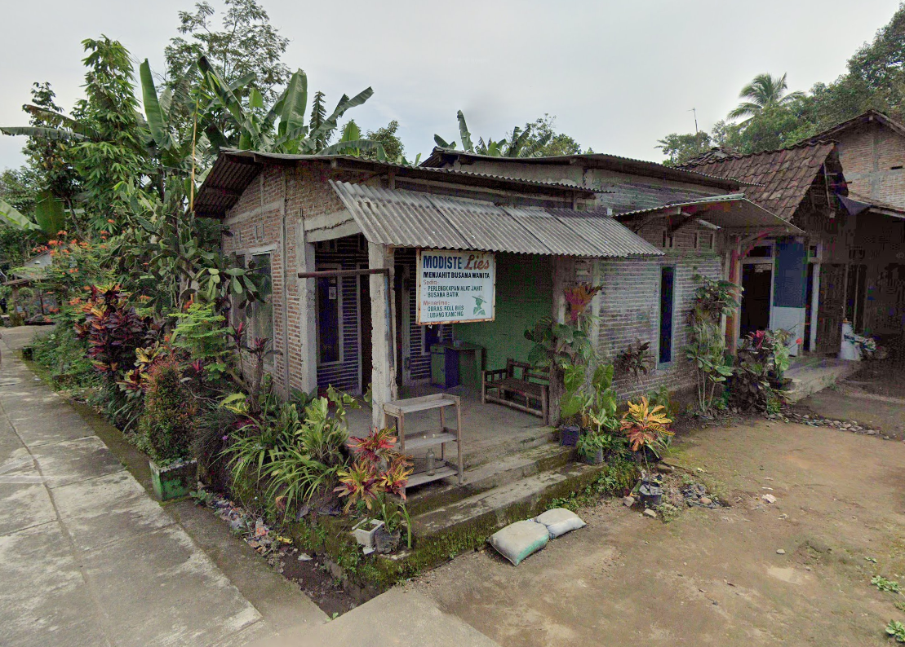

Pabrik Pothil
MakananMakanan Tradisional khas Magelang Porhil.

Pabrik Tahu Tradisional
MakananPembuatan tahu Tradisional.

Tahu Kupat dan Mie Balung [Milung]
MakananWarung makan dan jajanan.
Eco Roso
MakananMenjual berbagai macam kerupuk.

Omah Karpet
JasaJasa pembuatan atau costum karpet segala kendaraan.

Mosdittelies
JasaMenerima permak atau pembuatan baju.